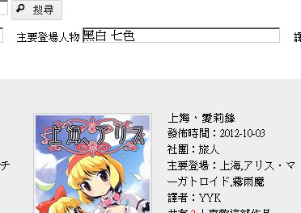

讀者好久不見，我還活著...
話說，前一陣子這個部落格突然好像人格轉換一樣了的，東西從日系變成西洋系...
其實只是因為站長必須準備出國壓力很大，為了盡快習慣語言，不得不隔離日文。
然後就真的一點日系動畫、音樂、電影、書籍都不碰了。
轉眼間住國外也快過去一年，語言的狀況總算是穩定下來，成功攻克第三門語言，耶～
結果我馬上開始毫不客氣地看動畫、翻漫畫（笑）
這段時間也趁著作業之便，寫了個網站。
本來只是為了應付作業而寫的留言板，想起過去翻過很多的東方本子，於是就寫了一個資料庫。
很巧的是，在資料庫上線測試以前，喵玉漢化的人就來找我了，說是希望合作。
說到喵玉漢化，也大概是在我神隱(?)之後不久，成立的漢化組。
稍微了解了一下，真的是嚇一跳，他們在短短不到 2 年間翻譯了超過 500 本同人啊。
喵玉的人告訴我，他入門東方時，很得益於我翻譯的教材和本子。
噗浪上現在也有不少人是讀著我2年前寫的教程進而認識東方Project。
那時候寫教程時，東方算是小眾的東西。沒想到可以擴散得這麼順利！
現在的東方眾比以前更加聲勢浩大，或是說，有點浩大過頭了吧？
另外收到友人的信而得到一個壞消息（不確定是否正確），
另一個也是專攻東方的東方小鎮，似乎因為組織上的問題，快要解散了。
真的是很遺憾啊。
不過，幸好現在要尋找東方的資源已經不是什麼問題了，簡直遍地都是。
總之呢，終於又可以回東方了！（心靈上）
關於新建的資料庫，稍微簡單的介紹一下好了：
地址：http://acq.yyktw.org/touhou
如大家所見這個有點醜的界面，總歸就是啪一下把漫畫的封面和概況列出來就是了。
標題關鍵字：中文、日文都可以輸入，很方便喔★
發行社團：因為沒有人翻譯社團名字，只能輸入日文。COPY啦。
主要登場人物：因為站長是配對狂熱星人，就寫出了配對狂熱星人最愛的功能。
你可以輸入兩個或三個名字，中間用空格隔開，然後按搜尋
～～～登登登！以他們為主要人物登場的作品就列出來啦！
人物也可以使用別名來搜尋。不過因為時間的緣故，資料庫未完備……

最近也差不多開始更新【東方Project推廣教程】星蓮船和神靈廟的內容了。
（啊啊在那之前，以前寫的教程圖片好多都叉燒包了orz……稍微有點挫敗的感覺。）